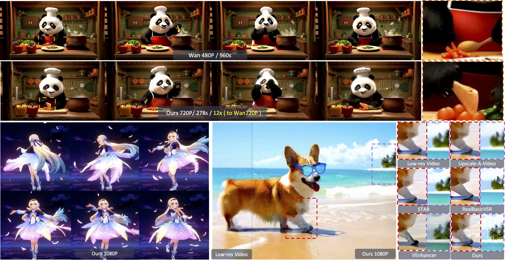
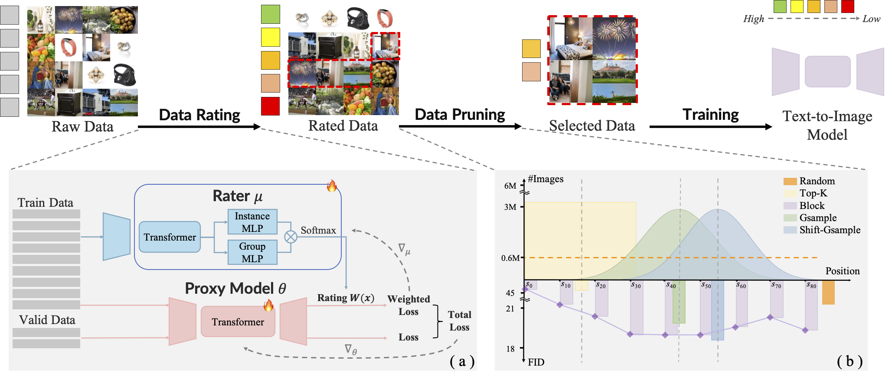

|
|
Biography
Hi👋 I'm Kaixin Ding, currently a first-year Ph.D. student at The University of Hong Kong, under the supervision of Prof.Hengshuang Zhao,
I received my B.Eng. Degree of Computer Science and Honors Degree (Chu Kochen Honors College) from Zhejiang University, China.
Now I focus on generative AI, especially for image and video.
Recent Publications
|

|
SURF: Signature-Retained Fast Video Generation
|
|

|
Alchemist: Unlocking Efficiency in Text-to-Image Model Training via Meta-Gradient Data Selection
|
Honors
- HKU Presidential PhD Scholar (HKU-PS), 2025.
- First-Class Scholarship of Zhejiang University (Top 3%), 2022, 2023, 2024.
Experiences
- Research Intern, Kling Team, Kuaishou Technology, 2025
|